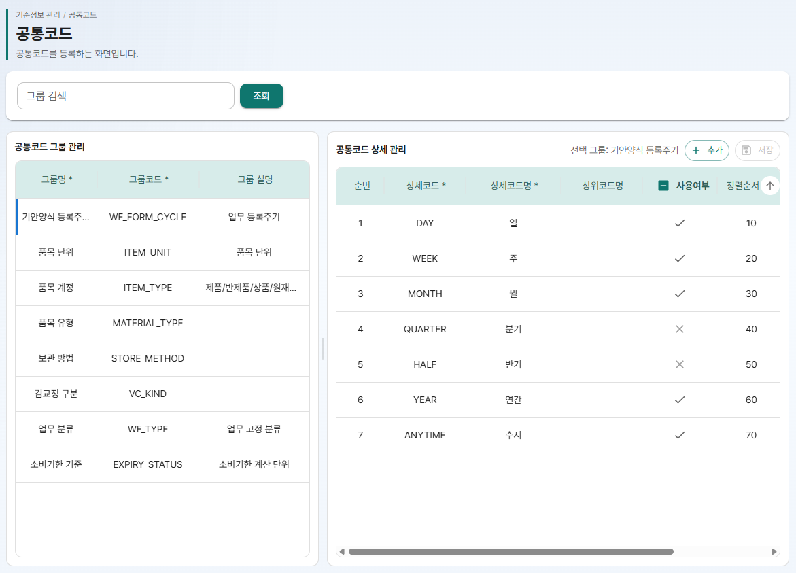
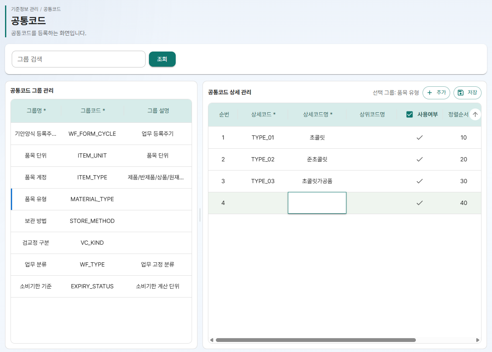
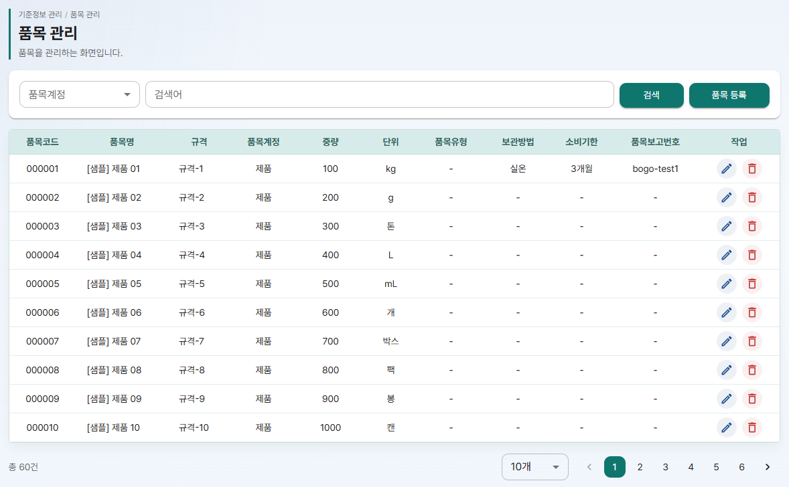
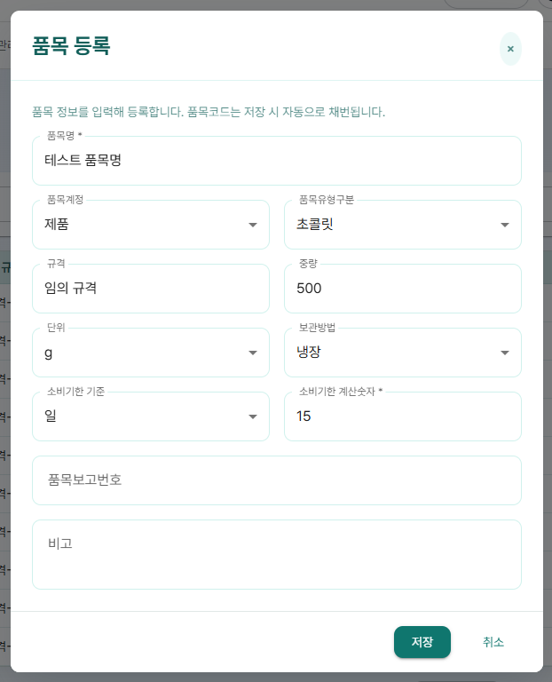
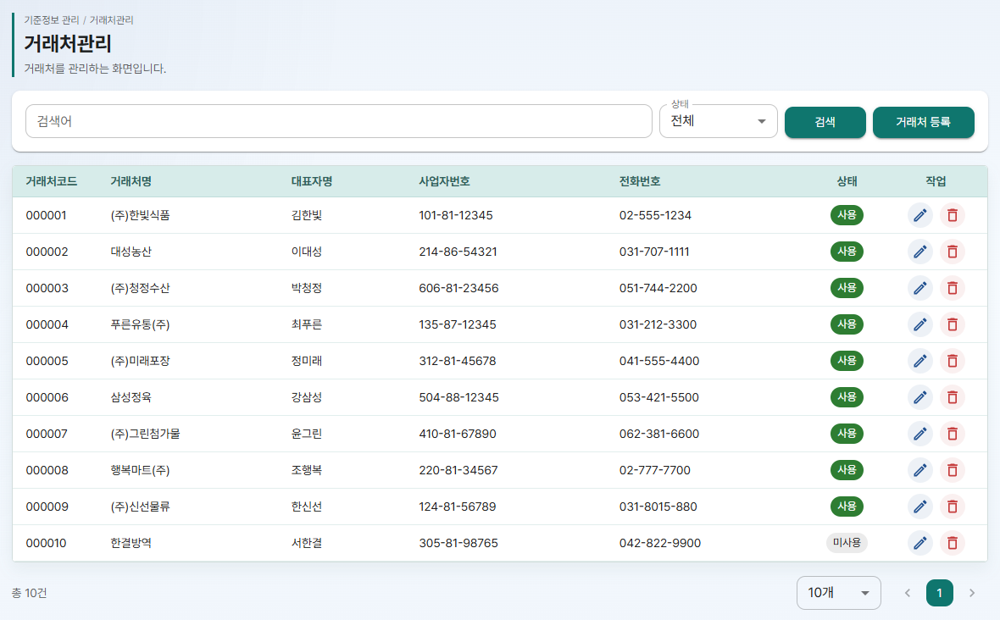
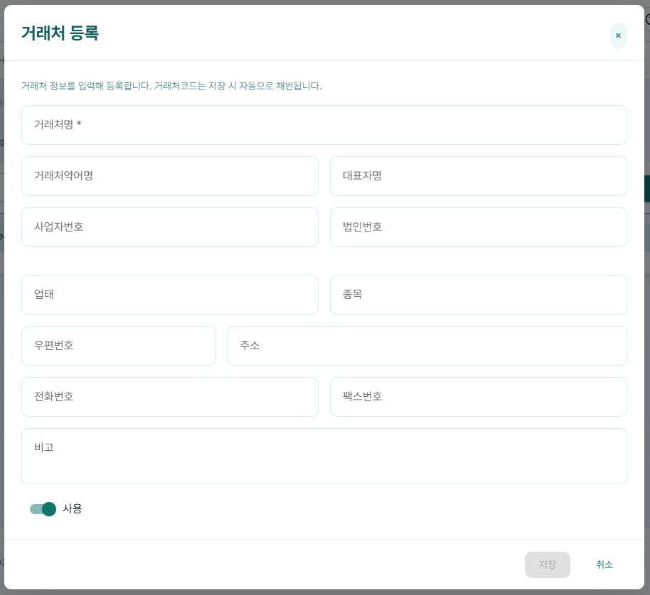
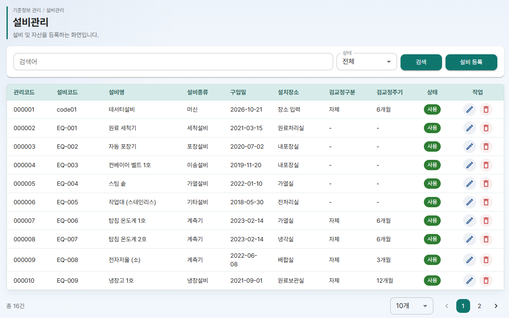
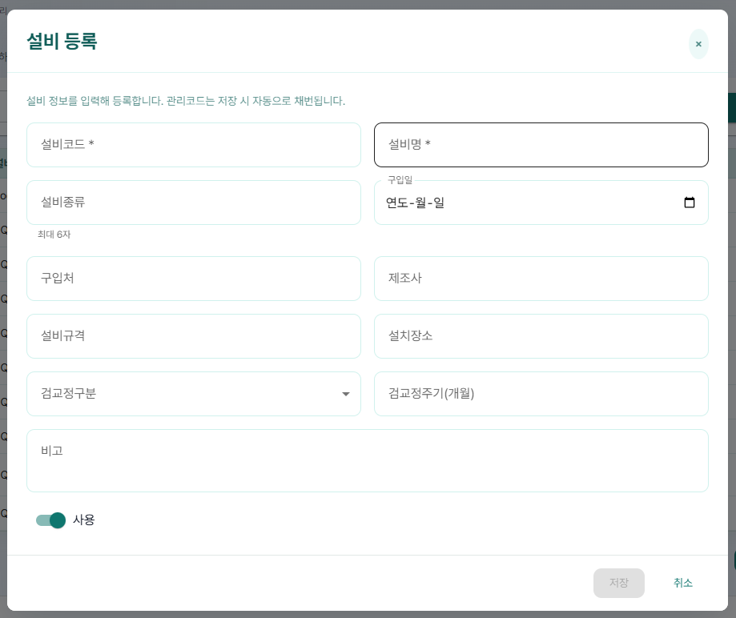

HACCP Cloud 사용 매뉴얼 ③편
기준정보 관리자 전용
- 품목, 설비 등록 창의 목록 값을 공통코드에서 추가하고 정리하는 방법
- 품목과 거래처를 등록하고 고치는 방법
- 설비를 등록하고, 쓰지 않는 설비를 미사용으로 돌리는 방법
이 편은 업체관리자만 쓰는 기능입니다. 메뉴의 기준정보 관리에서 시작합니다.
1. 기준정보 한눈에 보기
기준정보 관리 메뉴 아래에는 거래처관리, 품목 관리, 설비관리, 공통코드 관리 네 화면이 있습니다.` 품목과 설비 등록 창의 일부 칸은 공통코드 목록에서 고르므로, 공통코드를 먼저 확인한 뒤 등록을 시작합니다.
준비 순서
아래 칸은 공통코드 그룹에서 목록을 가져옵니다. 목록에 원하는 값이 없으면 2. 공통코드에서 그 그룹에 값을 추가합니다.
| 등록 창 | 칸 | 공통코드 그룹 |
|---|---|---|
| 품목 등록 | 품목계정 | 품목계정 |
| 품목 등록 | 품목유형구분 | 품목 유형 |
| 품목 등록 | 단위 | 단위 |
| 품목 등록 | 보관방법 | 보관 방법 |
| 품목 등록 | 소비기한 기준 | 소비기한 기준 |
| 설비 등록 | 검교정구분 | 검교정 구분 |
품목, 거래처, 설비 화면은 목록 오른쪽 작업 칸에 아이콘 버튼이 있습니다. 아이콘에 마우스를 올리면 이름이 보입니다.
- 연필 모양: 수정
- 휴지통 모양: 삭제 (설비는 미사용 처리)
2. 공통코드
기준정보 관리 > 공통코드 관리를 엽니다. 화면 위에 "공통코드를 그룹과 상세코드로 관리합니다." 라는 설명이 보입니다.
왼쪽은 "공통코드 그룹 관리", 오른쪽은 "공통코드 상세 관리" 입니다. 가운데 세로 막대를 끌거나, 막대를 누른 뒤 키보드 좌우 화살표로 두 영역의 폭을 조절합니다.
- 그룹 목록: 그룹명, 그룹코드, 그룹 설명
- 상세 목록: 순번, 상세코드, 상세코드명, 상위코드명, 사용여부, 정렬순서, 설명. 오른쪽 위에 "선택 그룹: (그룹명)" 이 보입니다.

그룹 찾기
그룹 검색 칸에 그룹 코드, 그룹명, 설명 중 일부를 입력하면 왼쪽 목록이 바로 걸러집니다. 조회는 서버에서 공통코드를 다시 불러옵니다.
상세코드 추가
- 왼쪽 그룹 목록에서 값을 추가할 그룹을 누릅니다.
- 오른쪽 추가를 누릅니다. 목록 맨 아래에 새 줄이 생기고, 정렬순서는 마지막 값보다 10 큰 숫자로 미리 채워집니다.
- 칸을 두 번 눌러 상세코드와 상세코드명을 입력합니다. 두 칸은 꼭 입력해야 합니다. 필요하면 정렬순서와 설명도 입력합니다.
- 오른쪽 저장을 누릅니다.
- "저장되었습니다." 가 보이면 끝입니다.

상세코드 수정, 사용/미사용
- 수정: 상세코드명, 사용여부, 정렬순서, 설명 칸을 두 번 눌러 고치고 저장합니다. 고친 줄은 색으로 표시됩니다.
- 사용/미사용: 사용여부 칸의 체크를 풀면 미사용이 됩니다. 사용여부 머리글의 체크를 누르면 그 그룹의 상세를 한 번에 사용 또는 미사용으로 바꿉니다. 바꾼 뒤 저장해야 반영됩니다.
여기서 바꾼 공통코드는 우리 업체에만 적용됩니다.
3. 품목 관리
기준정보 관리 > 품목 관리를 엽니다. 화면 위에 "제품/상품/원재료 등 품목 기준정보를 관리합니다." 라는 설명이 보입니다.
목록에는 품목코드, 품목명, 규격, 품목계정, 중량, 단위, 품목유형, 보관방법, 소비기한, 품목보고번호가 보입니다. 소비기한은 "12개월" 처럼 숫자와 기준이 함께 보이고, 기준이 "없음" 이면 "-" 로 보입니다.

품목 찾기
품목계정(기본 "전체")을 고르고 검색어(품목코드, 품목명, 규격, 품목계정)를 입력한 뒤 검색을 누릅니다.
품목 등록
- 품목 등록을 누릅니다. "품목 등록" 창이 열리고 "품목 정보를 입력해 등록합니다. 품목코드는 저장 시 자동으로 채번됩니다." 안내가 보입니다.
- 품목명을 입력합니다. 꼭 입력해야 하는 칸입니다.
- 품목계정, 품목유형구분, 규격, 중량, 단위, 보관방법을 입력합니다.
- 소비기한 기준을 고릅니다. 기본값은 "없음" 입니다. 다른 기준을 고르면 소비기한 계산숫자를 꼭 입력해야 합니다.
- 필요하면 품목보고번호(최대 20자)와 비고를 입력합니다.
- 저장을 누릅니다. 품목명이 비어 있으면 저장이 눌리지 않습니다.

품목 수정, 삭제
- 수정: 작업 칸 연필 아이콘(품목 수정) → "품목 수정" 창에서 고침 → 저장. 품목코드는 보이기만 하고 바꿀 수 없습니다.
- 삭제: 작업 칸 휴지통 아이콘(품목 삭제) → "품목 삭제" 창에 "(품목명) 품목을 삭제하시겠습니까? 삭제 후에는 목록에서 보이지 않습니다." 가 보이면 삭제.
4. 거래처관리
기준정보 관리 > 거래처관리를 엽니다. 화면 위에 "원부자재 매입처 등 거래처 기준정보를 관리합니다." 라는 설명이 보입니다.
목록에는 거래처코드, 거래처명, 대표자명, 사업자번호, 전화번호, 상태(사용/미사용)가 보입니다.

거래처 찾기
검색어(거래처코드, 거래처명, 대표자명, 사업자번호)를 입력하고 상태(전체, 사용, 미사용)를 고른 뒤 검색을 누릅니다.
거래처 등록
- 거래처 등록을 누릅니다. "거래처 등록" 창이 열리고 "거래처 정보를 입력해 등록합니다. 거래처코드는 저장 시 자동으로 채번됩니다." 안내가 보입니다.
- 거래처명을 입력합니다. 꼭 입력해야 하는 칸입니다.
- 거래처약어명, 대표자명, 사업자번호, 법인번호, 업태, 종목, 우편번호, 주소, 전화번호, 팩스번호, 비고를 필요한 만큼 입력합니다.
- 창 아래 스위치가 "사용" 인지 확인합니다. 기본은 사용입니다.
- 저장을 누릅니다. 거래처명이 비어 있으면 저장이 눌리지 않습니다.

사업자번호와 법인번호는 숫자만 입력하면 하이픈이 자동으로 들어갑니다(000-00-00000, 000000-0000000). 비워 둬도 되지만, 입력했다면 사업자번호는 10자리, 법인번호는 13자리여야 합니다. 자리 수가 모자라면 저장할 때 "사업자번호는 숫자 10자리입니다." 또는 "법인번호는 숫자 13자리입니다." 가 보입니다.
거래처 수정, 삭제
- 수정: 작업 칸 연필 아이콘(거래처 수정) → "거래처 수정" 창에서 고침 → 저장. 거래처코드는 보이기만 합니다.
- 삭제: 작업 칸 휴지통 아이콘(거래처 삭제) → "거래처 삭제" 창에 "(거래처명) 거래처를 삭제하시겠습니까? 삭제 후에는 되돌릴 수 없습니다." 가 보이면 삭제.
5. 설비관리
기준정보 관리 > 설비관리를 엽니다. 화면 위에 "생산/보관 설비 기준정보를 관리합니다." 라는 설명이 보입니다.
목록에는 관리코드, 설비코드, 설비명, 설비종류, 구입일, 설치장소, 검교정구분, 검교정주기, 상태(사용/미사용)가 보입니다.

설비 찾기
검색어(관리코드, 설비코드, 설비명, 구입처, 제조사)를 입력하고 상태(전체, 사용, 미사용)를 고른 뒤 검색을 누릅니다.
설비 등록
- 설비 등록을 누릅니다. "설비 등록" 창이 열리고 "설비 정보를 입력해 등록합니다. 관리코드는 저장 시 자동으로 채번됩니다." 안내가 보입니다.
- 설비코드와 설비명을 입력합니다. 두 칸은 꼭 입력해야 합니다.
- 설비종류(최대 6자), 구입일, 구입처, 제조사, 설비규격, 설치장소를 입력합니다.
- 검교정구분을 고르고 검교정주기(개월)를 입력합니다. 검교정주기는 비워 둘 수 있습니다.
- 필요하면 비고를 입력하고, 창 아래 스위치가 "사용" 인지 확인합니다.
- 저장을 누릅니다. 설비코드나 설비명이 비어 있으면 저장이 눌리지 않습니다.

관리코드는 시스템이 자동으로 매기는 번호이고, 설비코드는 업체에서 쓰는 설비 번호를 직접 넣는 칸입니다. 검교정주기에 값을 넣으면 1 이상 정수여야 하고, 아니면 "1 이상의 정수를 입력하세요." 가 보이며 저장이 눌리지 않습니다.
설비 수정
작업 칸 연필 아이콘(설비 수정) → "설비 수정" 창에서 고침 → 저장. 관리코드는 보이기만 합니다.
설비 미사용 처리, 다시 사용
- 사용 중인 설비의 작업 칸 휴지통 아이콘(설비 삭제)을 누릅니다.
- "설비 삭제" 창에 "(설비명) 미사용으로 처리하시겠습니까?" 가 보이면 미사용을 누릅니다. 설비는 지워지지 않고 상태만 미사용으로 바뀝니다.
- 다시 쓰려면 미사용 설비의 작업 칸 아이콘(마우스를 올리면 "사용으로 변경")을 누릅니다.
- "설비 다시 사용" 창에 "(설비명) 설비를 다시 사용하시겠습니까?" 가 보이면 사용을 누릅니다.
6. 안내 메시지 풀이
| 화면에 나오는 메시지 | 뜻과 해결 방법 |
|---|---|
| 공통코드를 불러오지 못했습니다. | 일시적인 연결 문제입니다. 화면을 새로 고치세요. |
| 저장되었습니다. | 공통코드 저장이 끝났습니다. 화면이 다시 조회됩니다. |
| 저장에 실패했습니다. | 공통코드를 저장하지 못했습니다. 입력 내용을 확인하고 다시 시도하세요. |
| 그룹을 먼저 선택하세요. | 그룹을 고르지 않고 상세 추가를 눌렀습니다. 왼쪽에서 그룹을 먼저 누르세요. |
| (그룹코드): 상세코드를 입력하세요. / (그룹코드): 상세코드명을 입력하세요. | 새 줄에 빈 칸이 있습니다. 그 그룹의 상세코드와 상세코드명을 채우세요. |
| (그룹코드): 상세코드가 중복됩니다. | 같은 그룹에 같은 상세코드가 이미 있습니다. 다른 코드를 쓰세요. |
| 저장하지 않은 변경사항이 있습니다. 계속 조회하시겠습니까? | 고친 내용을 저장하지 않고 조회를 눌렀습니다. 고친 내용을 지키려면 창을 닫고 먼저 저장하세요. |
| 저장 후 다시 조회하면 다른 영역의 저장하지 않은 변경사항은 사라집니다. 계속하시겠습니까? | 공통코드 화면에서 저장하지 않은 다른 영역의 변경이 있습니다. 계속하면 그 변경은 사라집니다. |
| 품목 목록을 불러오지 못했습니다. / 거래처 목록을 불러오지 못했습니다. / 설비 목록을 불러오지 못했습니다. | 일시적인 연결 문제입니다. 화면을 새로 고치세요. |
| 조회된 품목이 없습니다. / 조회된 거래처가 없습니다. / 조회된 설비가 없습니다. | 검색 조건에 맞는 항목이 없습니다. 검색어를 지우거나 상태(품목은 품목계정)를 "전체" 로 바꿔 보세요. |
| 1 이상의 정수를 입력하세요. | 품목의 소비기한 계산숫자나 설비의 검교정주기에 0, 음수, 소수가 들어 있습니다. 1 이상 정수로 고치세요. |
| 사업자번호는 숫자 10자리입니다. / 법인번호는 숫자 13자리입니다. | 번호 자리 수가 맞지 않습니다. 전부 입력하거나 칸을 비우세요. |
실패 메시지 자리에는 서버가 알려 준 이유가 대신 보일 수 있습니다.
품목 등록 창 목록에 원하는 값이 없어요
단위, 품목계정, 보관방법 같은 목록은 공통코드에서 옵니다. 2. 공통코드에서 해당 그룹에 상세코드를 추가하거나, 미사용으로 바뀐 값을 다시 사용으로 체크하고 저장하세요.
새 공통코드 그룹이 필요해요
그룹은 업체에서 만들 수 없습니다. HACCP Cloud 플랫폼 담당자에게 문의하세요.
삭제한 거래처를 되살리고 싶어요
삭제한 거래처는 되살릴 수 없습니다. 다시 등록하세요. 거래처코드는 새로 매겨집니다.
미사용으로 바꾼 설비가 목록에 안 보여요
상태를 "전체" 또는 "미사용" 으로 바꾸고 검색하세요.